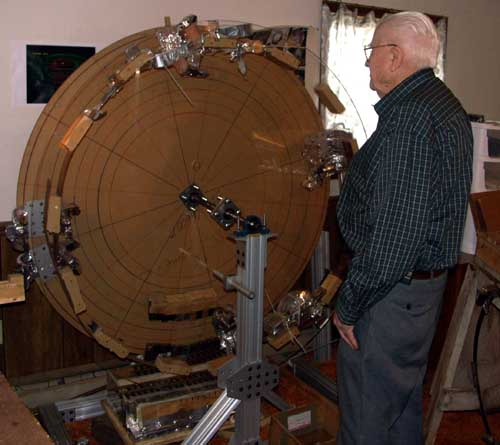
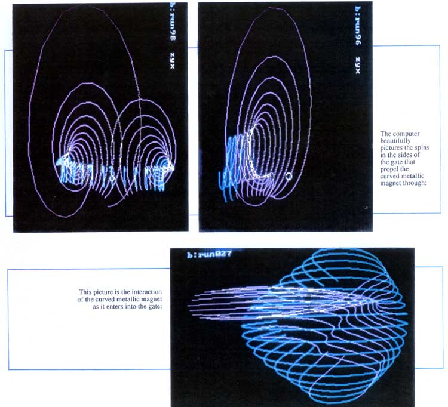
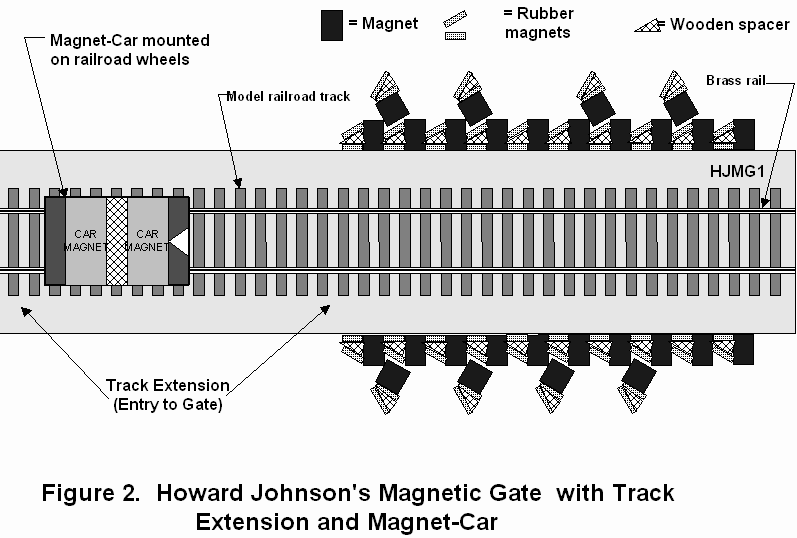

| Return to List of
Overunity Devices |
ORDER HOWARD'S BOOK |
Howard Johnson

A candid shot taken during the filming of the
upcoming Documentary Series
ENERGY FROM THE VACUUM
| Johnson's Motors
Johnson [[xxvii]] has built many novel linear and rotary motors and at least one self-powering magnetic rotary device — later stolen in a mysterious break-in at his laboratory — personally tested by the present author. Johnson uses a bidirectional "two particle" theory of magnetic flux lines which can be justified by Whittaker's earlier work showing the internal bidirectional energy flows in all potentials and fields. He also utilizes controlled spin-waves and self-initiated precise exchange forces, which are known to momentarily produce bursts of very strong forcefields [[xxviii]]. His approach is to use highly nonlinear assemblies of magnets which initiate the foregoing phenomena at very precise points in the rotation cycle. In short, he seeks to produce precisely located and directed sudden magnetic forces, using self-initiated nonlinear magnetic phenomena. This is analogous to what the Wankel engine did using the Lenz law effect by sharply interrupting a weak current in a external coil. We point out that the Lenz law effect and other very abrupt field changes momentarily produce not only an amplified Poynting energy flow component, but also an amplified Heaviside energy flow component as well. [xxvii]. Howard
R. Johnson, "Permanent Magnet Motor."
U.S. Patent No. 4,151,431, Apr. 24, 1979.
See also Johnson's U.S. Patents 4,877,983, Oct. 31, 1989 and
5,402,021, Mar. 28, 1995. [xxviii]. For an exposition of exchange forces and exchange
energy, see B. D. Cullity, Introduction to Magnetic Materials,
Addison-Wesley, Reading, MA, 1972; A.G. Gurevich and G.A. Melkov,
Magnetization Oscillations and Waves, CRC Press, 1996; Victor S. L'vov,
Wave Turbulence Under Parametric Excitation: Applications to Magnets,
Springer-Verlag, Berlin, 1994. See
also V.S. L'vov and L.A. Prozorova, "Spin Waves Above the
Threshold of Parametric Excitation," in A.S. Borovik-Romanov and
S.K. Sinha, Eds., Spin Waves and Magnetic Excitations, North-Holland,
Amsterdam, 1988. Excerpted from "On Extracting Electromagnetic Energy from the Vacuum," IC-2000, by Tom Bearden. |
The photos below are excerpted from Howard Johnson's book
"Discovering Magnetism", shortly to be
re-published by Cheniere Press
The computer plots were taken of one of Howard Johnson's
magnetic gates, and clearly show the spin forces
created by the magnets, and also the "firing" of a magnet, with a burst of
energy that is often several hundred
times larger than the baseline magnetic strength. Howard Johnson was
working in the field that is now known
as "spintronics" long before it was "officially" recognized. There are
over 200 magnetic effects, and only
around half of them are understood.

CTEC Inc. 1996 report on testing one of Howard Johnson's magnetic gates
Howard demonstrates one of his magnetic rail cars


Another Johnson self-powering all-magnetic motor under construction

Howard Johnson - unsung pioneer.
Born June 1st, 1919, passed away
January 2nd, 2008.